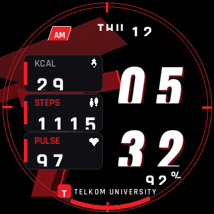
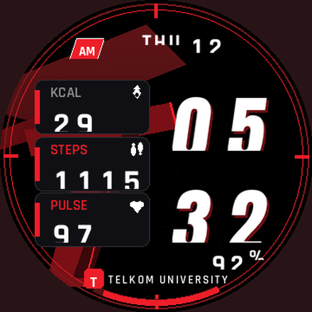
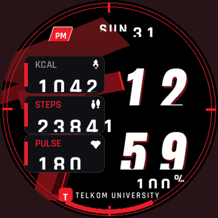
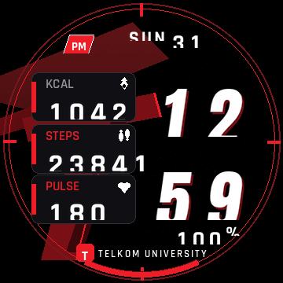
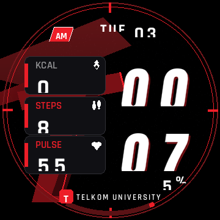
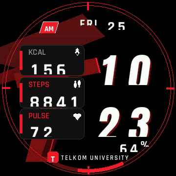
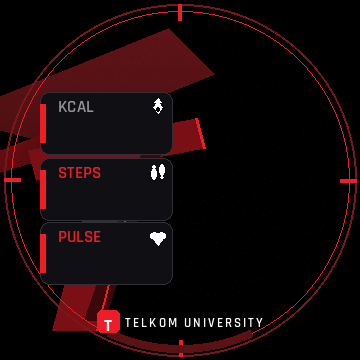

Hasil akhir: out/telu_trex_pro.bin (siap import via Zepp App Developer Mode). Mockup dirender dari isi .bin itu sendiri (parse balik + gambar ulang).
Simulasi layar bulat (semua konten lolos validator lingkaran r=175):


Uji kasus tepi (kotak penuh, untuk cek tabrakan):


Render langsung dari out/telu_trex_pro.bin (bukti end-to-end):

Background (bg):

Background (bg):